Buttons
Every rule that paints this component, in one file. Colour through a role, geometry straight from a primitive.
What it is
The control a person presses to do the thing the screen is for. It stands on all 105 painted screens and it is written 704 times, under four names that are one anatomy: a graphite plate, a hairline edge, a 10px corner, and the label in the body face. Two skins and no third. The quiet one is every action that is not the point of its zone; the brass one is the action the zone exists for, and there is exactly one of those per zone.
The four names are not four components. They are the four PLACES the same control stands in, and each carries the geometry its place needs: a header entry is small and inline, an action inside a state block has room to breathe, and anything inside a sheet is the full width of the sheet because a sheet has one column.
Anatomy
Which part is which, in the product's own words. Every class named here is one this file styles, and the build fails if it is not.
.auth-btn- The two entries in the header a logged-out visitor sees, Log in beside Sign up. 64 uses on 32 screens, and it is the smallest member of the family: 12px label, 8px of padding..state-btn- The action inside a state block, where a screen has nothing to show yet: Browse events on an empty Active bets, Notify me of new events on an empty category. 66 uses on 40 screens..provider-btn- A full-width row inside a sheet, carrying a mark and a label: Continue with Google, a payment method, a wallet. 444 uses on 105 screens, which makes it the one a person meets most..confirm-btn- The brass action at the foot of a sheet, a panel or the mobile dock: Confirm bet, Add funds. 130 uses on 105 screens..primary- Not a button, a modifier. It takes a quiet.auth-btnor.state-btnand makes it the brass one, and it is the only way this component becomes brass by choice rather than by place..prov-x- The brand mark of X inside a provider row, filled with the current colour rather than stroked, because a logotype is not an icon..prov-apple- The same for Apple.
Live
The component in the markup it ships with, quoted from the frozen kit, inside the product's own wrapper and painted by components/index.css alone. Each frame is a page of its own, so the width under the title is a real viewport and the media queries answer to it.
Two of the four names the product wears. .provider-btn and .confirm-btn are not here because neither has a ground outside dialog.app-dialog, .bet-panel, .bet-sheet or .bet-dock: on the bare canvas they would render in the user agent's grey. They stand in the seven specimens listed below instead.
States, as they look
Photographs, not renderings. Each was taken in the specimen linked beside it with a REAL pointer, a real Tab and the mouse button really held down (ui-kit/_verify/states.cjs); nothing here is a state faked with a stand class, which is the rule this section used to be missing because of. One row per distinct FACE: two elements that measure the same at rest are one picture, however many screens carry them, and that grouping is computed rather than chosen. The pictures go stale the moment a rule changes, so each one records the files it was taken from and python3 ui-kit/_states.py fails when their bytes move.
The quiet header entry. The ground steps one stone darker under the pointer, the edge goes brass at 45 per cent, and the label lifts to the strong ink; held down it settles onto the pressed stone. The focus ring is the system's one ring, brass, 2px, offset 2px.
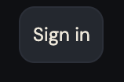
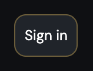
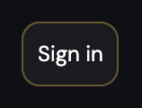
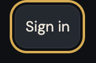
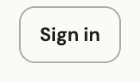
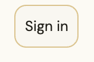
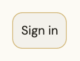
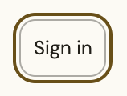
The same control with more padding, in the middle of an empty screen. Identical answers, which is the point: two names, one behaviour.
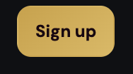
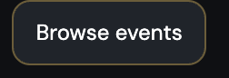
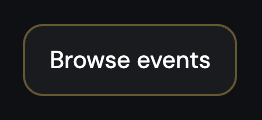
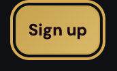
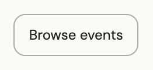
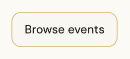
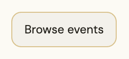
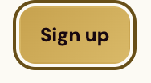
Sign up, the brass one. Hover takes the lit brass to both stops so the whole face comes up and adds a soft glow under it; the press turns the gradient over to 315 degrees so the light falls to the bottom right, which is what a plate pushed in looks like. The glow goes with it, because the glow is the lift.
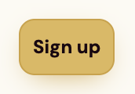
Browse events, the brass action of a state block. Same three-step.
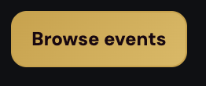
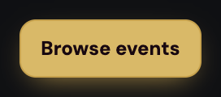
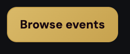
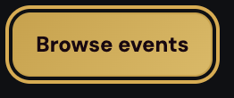
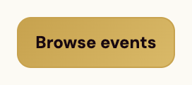
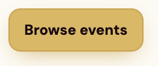
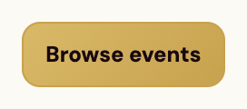
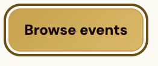
A provider row inside a sheet. Quiet, full width, and the only member that also lifts one pixel on hover, because a row that wide needs a second signal that it is a target at all.
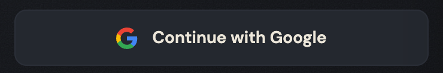
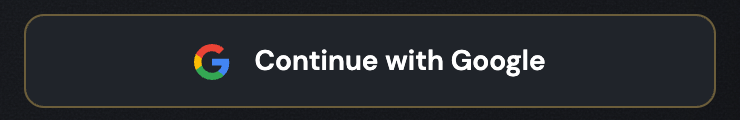
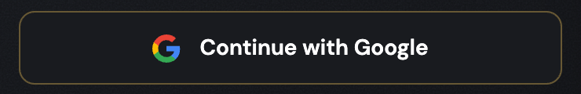
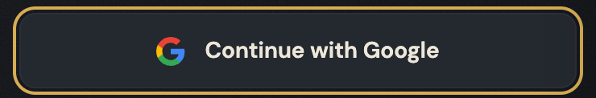
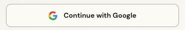
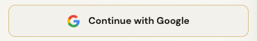
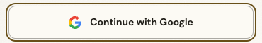
Add funds, brass, the width of the sheet, no edge at all: an edge on a lit plate that wide reads as a seam. This is also the one control the product ever disables, and a disabled one neither lights up nor presses.
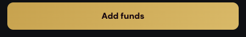
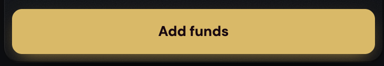
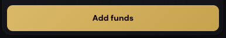
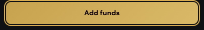
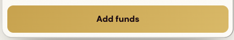
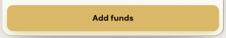
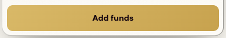
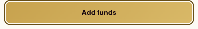
The first child of an action bar, brass by position rather than by class. Its ink stays dark on the lit plate under the pointer, which the family's quiet hover would otherwise take to white.
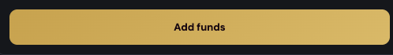
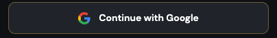
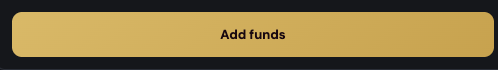
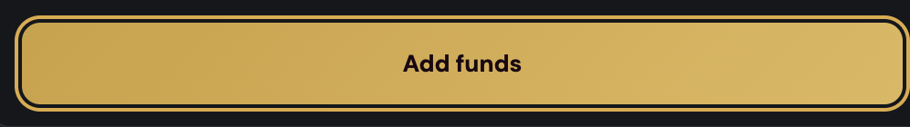
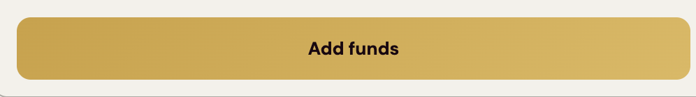
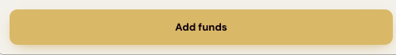
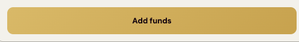
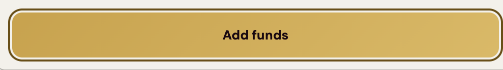
The second child of the same bar, quiet, and the answer is the family's.
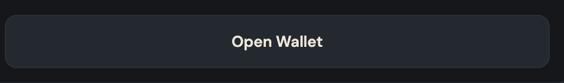
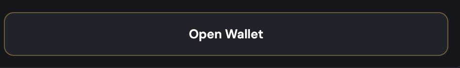
When to use
The judgement a generator cannot read out of css, and the reason ui-kit/authored/button.md exists.
Ask where the control stands, not what you want it to look like. The place decides the name, and the name brings its own geometry: .auth-btn in the header, .state-btn in a state block, .provider-btn and .confirm-btn inside a sheet, a panel or the action bar. A control that is none of those is probably not a button of this family, and the anti-rule below is the commonest way that goes wrong.
Then decide brass or quiet, and that decision is not free: one brass action per zone, which is the constraint quoted below this section. In practice the brass one is the thing the sheet was opened to do (Add funds in the deposit dialog, Confirm bet in the panel) and everything beside it is quiet, including the actions a person is more likely to press. Cancel is quiet. Not now is quiet.
Two labels in this family are still two names for one thing and it is a known defect, not a decision: the funding action is Deposit on My Profile and in the wallet, and Add funds in the header and the dialog; the auth entry is Log in in the header and Sign in in the dialog. Both are open in voice/docs/microcopy.md under same-thing. Copy the label from the row there rather than from the nearest screen.
The rule, and the anti-rule
One sentence to follow and one mistake worth naming. An anti-rule has to name the component that should have been used instead, or it is a complaint rather than an address, and the build checks that it does.
Take the name of the PLACE, and let the scope give it its skin: the same four declarations paint all four names, so a button that looks wrong is almost always a button in the wrong scope rather than a button that needs a new rule.
Never dress an outcome as an action: a YES or a NO is yesno, tinted green and red because those two colours mean an outcome in this product and nothing else, and a quiet chip that filters, sorts or loads more is filters, catnav or loadmore, which are one graphite chip family with a lighter press than this one.
Constraints
What this component may do beside the others: how many of it a screen may carry, and where it may not stand. The one rule that names this component, quoted from Rules of use, which is where each one was decided and where its numbers and its source are. This is an extract and not a second copy: gate 26 fails the build if a rule names a component whose page is silent, and equally if a page carries a rule the document does not have.
| rule | what it says | class | check it at a glance |
|---|---|---|---|
| R1 | One primary action per ZONE, not per screen | COMPOSITION | count the filled brass buttons: one in the header bar, one in the page body, never two in either |
Roles it reads
Colour comes in only through these. Change one on the token page and it changes here and on every screen at once.
--bg-brand-mark--bg-control--bg-control-hover--bg-pressed--border-brass-hover--border-hairline--color-action--color-action-lit--opacity-disabled--text-on-brass--text-primary--text-strongClasses
Every class this file styles, and how many of the 105 painted screens carry it. A zero is not automatically dead: the last column says whether the class is built at runtime, shown only in the kit, a leftover of the grey wireframes, used by a course page, or genuinely used by nothing. Gate 30 fails the build on the last kind.
| class | screens | if zero |
|---|---|---|
| .app-case | 105 | |
| .app-dialog | 105 | |
| .auth-btn | 32 | |
| .bet-dock | 8 | |
| .bet-panel | 11 | |
| .bet-sheet | 4 | |
| .confirm-btn | 105 | |
| .cta-bar | 3 | |
| .ic | 105 | |
| .outcome-dialog | 6 | |
| .primary | 58 | |
| .prov-apple | 105 | |
| .prov-x | 105 | |
| .provider-btn | 105 | |
| .resolved-panel | 1 | |
| .signin-dialog | 105 | |
| .state-btn | 40 |
Where it stands
What the file says
The selectors and the css, for a person about to edit them. To change this component, edit components/button.css; to change a value it reads, edit the role in components/tokens.css.
Every state rule, and what it moves
| selector | what moves |
|---|---|
| .app-case .state-btn.primary:hover,.app-case .confirm-btn:hover:not(:disabled):not([aria-disabled="true"]),.app-case .auth-btn.primary:hover,.app-case .cta-bar>button:first-child:hover,.app-case .cta-bar>a:first-child button:hover,dialog.app-dialog .confirm-btn:hover:not(:disabled):not([aria-disabled="true"]) | background:linear-gradient(135deg,var(--color-action-lit),var(--color-action-lit));color:var(--text-on-brass);box-shadow:0 6px 18px -8px var(--color-action) |
| .app-case .state-btn:not(.primary):hover,.app-case .auth-btn:not(.primary):hover,.app-case .provider-btn:hover,.app-case .cta-bar button:hover,.app-case :is(.bet-panel,.bet-sheet) .provider-btn:hover,.app-case .bet-dock .provider-btn:hover,dialog.app-dialog:not(.outcome-dialog):not(.signin-dialog) .provider-btn:hover | border-color:var(--border-brass-hover);background:var(--bg-control-hover);color:var(--text-strong) |
| dialog.app-dialog.outcome-dialog .provider-btn:hover | border-color:var(--border-brass-hover);background:var(--bg-control-hover);color:var(--text-strong) |
| dialog.app-dialog.signin-dialog .provider-btn:hover | border-color:var(--border-brass-hover);background:var(--bg-control-hover);transform:translateY(-1px) |
| .app-case .state-btn.primary:active,.app-case .auth-btn.primary:active,.app-case .cta-bar>button:first-child:active,.app-case .cta-bar>a:first-child button:active | background:linear-gradient(315deg,var(--color-action),var(--color-action-lit));box-shadow:none |
| .app-case .confirm-btn:active:not(:disabled):not([aria-disabled="true"]),dialog.app-dialog .confirm-btn:active:not(:disabled):not([aria-disabled="true"]) | background:linear-gradient(315deg,var(--color-action),var(--color-action-lit));box-shadow:none |
| .app-case .state-btn:not(.primary):active,.app-case .auth-btn:not(.primary):active,.app-case .provider-btn:active,.app-case .cta-bar button:active | background:var(--bg-pressed) |
| dialog.app-dialog:not(.outcome-dialog):not(.signin-dialog) .provider-btn:active | background:var(--bg-pressed) |
| dialog.app-dialog.outcome-dialog .provider-btn:active,dialog.app-dialog.signin-dialog .provider-btn:active | background:var(--bg-pressed) |
| .app-case :is(.bet-panel,.bet-sheet) .provider-btn:active,.app-case .bet-dock .provider-btn:active | background:var(--bg-pressed) |
| .app-case .confirm-btn:disabled,.app-case .confirm-btn[disabled],.app-case .confirm-btn[aria-disabled="true"],dialog.app-dialog .confirm-btn:disabled,dialog.app-dialog .confirm-btn[disabled],dialog.app-dialog .confirm-btn[aria-disabled="true"] | opacity:var(--opacity-disabled);cursor:not-allowed |
The tokens these states read, on both grounds
Neither panel is a screenshot. Each carries data-theme itself, so the token resolves inside it and a role that was given a value in only one theme shows up here as a control that does not move.
--color-action-litConfirm betthe ground the control settles onto--text-on-brassConfirm betthe label, on the ground this state puts it on--color-actionConfirm betthe ground the control settles onto--border-brass-hoverConfirm betthe edge this state draws--bg-control-hoverConfirm betthe ground the control settles onto--text-strongConfirm betthe label, on the ground this state puts it on--bg-pressedConfirm betthe ground the control settles onto--opacity-disabledConfirm betConfirm bethow far the control fades, beside the same control at rest--color-action-litConfirm betthe ground the control settles onto--text-on-brassConfirm betthe label, on the ground this state puts it on--color-actionConfirm betthe ground the control settles onto--border-brass-hoverConfirm betthe edge this state draws--bg-control-hoverConfirm betthe ground the control settles onto--text-strongConfirm betthe label, on the ground this state puts it on--bg-pressedConfirm betthe ground the control settles onto--opacity-disabledConfirm betConfirm bethow far the control fades, beside the same control at restcomponents/button.css
/* components/button.css
Component: button. Classes: .auth-btn, .confirm-btn, .primary, .prov-apple, .prov-x, .provider-btn, .state-btn.
Reads: --bg-brand-mark, --bg-control, --bg-control-hover, --bg-pressed, --border-brass-hover, --border-hairline, --color-action, --color-action-lit, --opacity-disabled, --text-on-brass, --text-primary, --text-strong
Stand: ui-kit/button.html
Stands on: 105 ui-visual screens (404.html, 500.html, active-bets-empty-new.html, active-bets-empty-resolved.html, active-bets-error.html, ...)
Colour goes through a role, geometry straight from a primitive. No em dash. */
/* ONE ANATOMY, FOUR NAMES, AND THE ANATOMY IS WRITTEN ONCE. --bg-control, a
1px --border-hairline, --text-primary and --radius-10 were declared four
times over: once for .auth-btn, once for .state-btn, once for the provider
button inside a dialog, and once in account.css for the button of the action
bar. Four identical rest states under four names is not four components, it
is one component nobody merged, and the proof of that is what the four did
NOT agree on: the hover, below.
.provider-btn joins the same block rather than keeping a rule that set a
border and no ground. It had one everywhere it stands, because every scope it
ships in supplied one; on the bare canvas it rendered in the user agent's
grey, which is the trap .bet-dock fell into two steps ago. Measured before
the merge: 2220 provider buttons across the tree, every one on --bg-control
already, so the ground here is a value that was already true being written
in the one place it belongs. */
.auth-btn,.state-btn,.provider-btn,.app-case .cta-bar button{background:var(--bg-control);border:1px solid var(--border-hairline);color:var(--text-primary);border-radius:var(--radius-10);cursor:pointer}
.auth-btn{padding:var(--space-8) var(--space-8);font-size:var(--text-12)}
.state-btn{padding:var(--space-8) var(--space-12);font-size:var(--text-12)}
.provider-btn{display:flex;align-items:center;gap:var(--space-8);padding:var(--space-12);font-size:var(--text-13);width:100%;text-align:left}
.provider-btn .ic{width:var(--icon-18);height:var(--icon-18)}
/* THE ACTION BAR'S BUTTON IS A BUTTON, and it came here from account.css on
2026-08-03 (ui-kit backlog S11). It was styled by the component that draws
the BAR, so a person assembling one hit a rule the button page had never
heard of, and the class map could not see it either, because the markup is a
bare <button> with no class of its own. What stayed behind is the bar: its
stone, its top hairline, its two rounded corners. What is arrangement went
one step further, to patterns/action-bar.css, which already said how the
anchor children share the row and now says it for the bare ones too. This
does not close backlog item 16d: account.css is still a CTA bar and a
transaction list in one file, and that is a boundary question, not a paint
one. */
.app-case .cta-bar button{font-family:var(--font-body);font-weight:var(--weight-semibold);font-size:var(--text-13);padding:var(--space-12);min-height:var(--control-44)}
/* THE BRASS ACTION, AND IT IS TWO ANSWERS RATHER THAN ONE. A primary quiet
button keeps the 1px edge it already had and turns it brass; a confirm
button has no edge at all, because it is the whole width of a sheet and an
edge on a lit plate that wide reads as a seam. Both are written once here
instead of six times, but they are NOT forced into one rule: 1px and 0 are
different geometry and merging them would have moved a pixel on every screen
in the product to make a paragraph tidier. */
.auth-btn.primary,.state-btn.primary{background:linear-gradient(135deg,var(--color-action),var(--color-action-lit));color:var(--text-on-brass);border-color:var(--color-action);font-weight:var(--weight-bold)}
/* NO font-family ON THIS LINE, and the snapshot is why. Writing the family into
the merged block moved 40 confirm buttons from "DM Sans", system-ui,
sans-serif to "DM Sans", sans-serif: the bare .confirm-btn had never declared
one and was inheriting --font-body-root off the body, while the three scoped
copies below declare --font-body. Same face either way, a different fallback
if it ever fails to load, and a difference nobody asked this pass to make.
A merge is allowed to delete a duplicate; it is not allowed to add a
declaration to an element that did not have one. */
.confirm-btn,.app-case .cta-bar>button:first-child,.app-case .cta-bar>a:first-child button{background:linear-gradient(135deg,var(--color-action),var(--color-action-lit));border:0;color:var(--text-on-brass);border-radius:var(--radius-10);font-weight:var(--weight-bold);cursor:pointer}
.confirm-btn{padding:var(--space-12);font-size:var(--text-14);width:100%}
.app-case .state-btn,.app-case .confirm-btn,.app-case .auth-btn,.app-case .provider-btn,.app-case .cta-bar button,dialog.app-dialog .confirm-btn,dialog.app-dialog .provider-btn{transition:filter var(--dur-quick) ease,border-color var(--dur-quick) ease,background var(--dur-quick) ease,color var(--dur-quick) ease,box-shadow var(--dur-quick) ease}
/* Two changes to this line, no change to its values. The confirm button is the one
control the product actually disables (Add funds below the minimum), so its hover is
narrowed the way input.css narrows the amount field: a dead control does not light up.
And the same button inside a plain dialog is added to the group rather than given a
second rule of its own, because it is the same button and one glow is one decision. */
/* THE THREE-STEP OF A BRASS PLATE, and it costs no value at all. Rest lights the
plate from the top left; hover takes the lit role to both stops so the whole
face comes up; press (below) flips the angle so the light falls to the bottom
right, which is what a plate pushed IN looks like.
It replaces filter:brightness(1.08), which was a raw number doing a colour job.
A filter multiplies whatever is underneath, so no theme and no role can reach
it, and the same 1.08 is a different decision on each of the two grounds. The
glow keeps its own line because it is depth, not colour. */
/* THE INK IS RESTATED HERE, and the hover measurement is why. The quiet hover
below sets color:--text-strong and reaches the action bar's button through
`.app-case .cta-bar button:hover`, which does not know that the FIRST child of
that bar is brass. Before this pass the quiet hover set no colour at all and
the rest state survived it; now it does, so the brass button read white ink on
a lit brass plate the moment a pointer touched it, on all three action-bar
screens and in both themes. The other five selectors here already have this
value at rest and it costs them nothing. Caught by the pointer pass, which is
the only instrument in this repo that can see a hover at all. */
.app-case .state-btn.primary:hover,.app-case .confirm-btn:hover:not(:disabled):not([aria-disabled="true"]),.app-case .auth-btn.primary:hover,.app-case .cta-bar>button:first-child:hover,.app-case .cta-bar>a:first-child button:hover,dialog.app-dialog .confirm-btn:hover:not(:disabled):not([aria-disabled="true"]){background:linear-gradient(135deg,var(--color-action-lit),var(--color-action-lit));color:var(--text-on-brass);box-shadow:0 6px 18px -8px var(--color-action)}
/* THE QUIET HOVER, AND THIS IS THE ONE PIXEL THE MERGE MOVES ON PURPOSE.
The family disagreed here and only here. .provider-btn and the action bar's
button went to --bg-control-hover, which tokens.css declares in exactly those
words ("8 hover fills on those same controls"); .auth-btn and .state-btn
RESTATED --bg-control, so the ground under the pointer did not move at all
and the only answer to a hover was the edge going brass. That is not a
quieter version of the same decision, it is the decision not being taken:
the two names the majority of the family does not use were the two that
answered differently.
So the ground moves, on 58 screens and 130 elements. Measured before and
after with a real pointer (ui-kit/_verify/browser.cjs lesson 11), because a
change that lives entirely inside :hover is invisible to every snapshot in
this repo.
The dialog scope is in the same block and not in a rule of its own: a dialog
is NOT inside .app-case in this product (measured, the markup puts it after
the case closes), so .app-case .provider-btn:hover cannot reach one and the
two selectors are the same decision written for the two places it has to
land. The :not() pair keeps it off the two dialogs that skin their own
provider button and answer below. */
.app-case .state-btn:not(.primary):hover,.app-case .auth-btn:not(.primary):hover,.app-case .provider-btn:hover,.app-case .cta-bar button:hover,.app-case :is(.bet-panel,.bet-sheet) .provider-btn:hover,.app-case .bet-dock .provider-btn:hover,dialog.app-dialog:not(.outcome-dialog):not(.signin-dialog) .provider-btn:hover{border-color:var(--border-brass-hover);background:var(--bg-control-hover);color:var(--text-strong)}
/* SIX CLASSES LEFT HERE ON 2026-08-03, and what they were is the reason the
check that found them exists. `.btn-primary`, `.btn-secondary`, `.btn-sm`,
`.btn-md`, `.btn-lg` and `.btn-block` were half of what this component
declared, they had two specimens and a size ramp of their own, and they stood
on ZERO of the 105 painted screens and zero of the 104 grey ones. Not one
screen ever adopted the vocabulary; the product wrote `.auth-btn`,
`.state-btn`, `.provider-btn` and `.confirm-btn` instead, 704 times.
That is not dead weight, it is a stand teaching a scheme nobody uses: the next
person to build a screen reads the button page, takes `.btn-secondary`, and
adds a seventh class no rule of the product has ever painted. Gate 30 asks the
question now, `ui-kit/_adoption.py` answers it, and the frozen kit keeps its
own copy of these nine declarations in its own <style>, because provenance has
to go on rendering the way it did. */
.app-case .resolved-panel .state-btn{width:100%}
/* .bet-dock JOINED THIS GROUP, and it is the one pixel this pass moves on purpose.
Four screens (event-detail-bet-error, -insufficient, -processing, -reconcile) ship
Confirm bet inside the sticky mobile dock, and nothing in the system gave it a
background: the panel and the sheet were named here, the dock was not, and the only
dock rule set width and padding. So the product's primary action rendered in the
user agent's own ButtonFace grey while its hover treated it as brass, on the four
screens where a person is actually placing money. A missing value is a value, and
this is the second time that sentence has been paid for on this stage. Found by the
states pass, because giving it a press made the rest state impossible to overlook. */
.app-case :is(.bet-panel,.bet-sheet,.bet-dock) .confirm-btn{border:0;border-radius:var(--radius-10);background:linear-gradient(135deg,var(--color-action),var(--color-action-lit));color:var(--text-on-brass);font-family:var(--font-body);font-weight:var(--weight-bold)}
.app-case .bet-sheet .confirm-btn{padding:var(--space-16)}
dialog.app-dialog.outcome-dialog .provider-btn{display:flex;width:100%;box-sizing:border-box;justify-content:center;align-items:center;gap:var(--space-8);padding:var(--space-12);background:var(--bg-control);border:1px solid var(--border-hairline);border-radius:var(--radius-10);color:var(--text-primary);font-family:var(--font-body);font-weight:var(--weight-bold);font-size:var(--text-14);cursor:pointer;transition:border-color var(--dur-quick) ease,background var(--dur-quick) ease,color var(--dur-quick) ease}
/* THE WIN AND LOSS OVERLAYS KEEP A HOVER RULE OF THEIR OWN, and only because
of specificity: their rest state is written at (0,4,1) above, so the family's
hover at (0,3,1) would lose to it and the button would answer nothing. The
VALUE is the family's now. It was --bg-surface, which is the role of a
header, a dialog and a dropdown - a surface a thing stands ON, not a state a
control goes INTO - and it was the same wrong reach .btn-secondary made, on
the two screens where a person has just won or lost money. */
dialog.app-dialog.outcome-dialog .provider-btn:hover{border-color:var(--border-brass-hover);background:var(--bg-control-hover);color:var(--text-strong)}
.app-case :is(.bet-panel,.bet-sheet) .provider-btn,.app-case .bet-dock .provider-btn{justify-content:center;font-family:var(--font-body);font-weight:var(--weight-semibold)}
dialog.app-dialog.signin-dialog .provider-btn{justify-content:center;gap:var(--space-12);padding:var(--space-12);font-family:var(--font-body);font-size:var(--text-14);font-weight:var(--weight-semibold);transition:border-color var(--dur-quick) ease,background var(--dur-quick) ease,transform var(--dur-fast) ease}
dialog.app-dialog.signin-dialog .provider-btn:hover{border-color:var(--border-brass-hover);background:var(--bg-control-hover);transform:translateY(-1px)}
dialog.app-dialog.signin-dialog .provider-btn .ic{width:var(--icon-18);height:var(--icon-18);flex:0 0 var(--icon-18);stroke:none}
dialog.app-dialog.signin-dialog .provider-btn .prov-x,dialog.app-dialog.signin-dialog .provider-btn .prov-apple{color:var(--bg-brand-mark);fill:currentColor}
.app-case .bet-dock .confirm-btn{width:auto;padding:var(--space-12)}
/* Press, the axis the file was missing. A control answered the pointer on the way in and
said nothing when it was pushed, and the dock and the bet sheet are mobile only, where
there is no hover to answer with: a tap had no reply at all.
Two mechanisms and no third. A QUIET control settles onto --bg-pressed, one role for the
whole system, declared in both themes. A BRASS ACTION keeps its ground and turns its own
gradient over, 135deg to 315deg, with the hover glow dropped. It is already lit, so
swapping it to a darker ground would read as disabled; the reversal is geometry and reads
the same two roles the rest state does.
Each rule mirrors the hover selector it answers, so the two sit at equal specificity and
the press, being later in the file, wins while the pointer is down. */
.app-case .state-btn.primary:active,.app-case .auth-btn.primary:active,.app-case .cta-bar>button:first-child:active,.app-case .cta-bar>a:first-child button:active{background:linear-gradient(315deg,var(--color-action),var(--color-action-lit));box-shadow:none}
.app-case .confirm-btn:active:not(:disabled):not([aria-disabled="true"]),dialog.app-dialog .confirm-btn:active:not(:disabled):not([aria-disabled="true"]){background:linear-gradient(315deg,var(--color-action),var(--color-action-lit));box-shadow:none}
.app-case .state-btn:not(.primary):active,.app-case .auth-btn:not(.primary):active,.app-case .provider-btn:active,.app-case .cta-bar button:active{background:var(--bg-pressed)}
dialog.app-dialog:not(.outcome-dialog):not(.signin-dialog) .provider-btn:active{background:var(--bg-pressed)}
/* the sheet skins and the bet panel each set their own hover background one class higher, so
the press has to answer at their level or the hover would still be showing under the finger */
dialog.app-dialog.outcome-dialog .provider-btn:active,dialog.app-dialog.signin-dialog .provider-btn:active{background:var(--bg-pressed)}
.app-case :is(.bet-panel,.bet-sheet) .provider-btn:active,.app-case .bet-dock .provider-btn:active{background:var(--bg-pressed)}
/* Disabled. The product disables exactly one control, the Add funds button in the deposit
dialog when the amount is under the minimum, and it says so with aria-disabled because a
native disabled button is not focusable and the reason for it has to stay reachable. That
button rendered identically to an enabled one until now. All three spellings are matched
so the attribute and the property give the same answer, and the hover and the press above
are narrowed on the same pair, so a dead button neither lights up nor presses. */
.app-case .confirm-btn:disabled,.app-case .confirm-btn[disabled],.app-case .confirm-btn[aria-disabled="true"],dialog.app-dialog .confirm-btn:disabled,dialog.app-dialog .confirm-btn[disabled],dialog.app-dialog .confirm-btn[aria-disabled="true"]{opacity:var(--opacity-disabled);cursor:not-allowed}